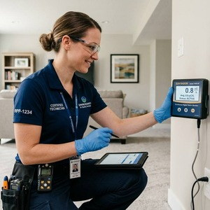
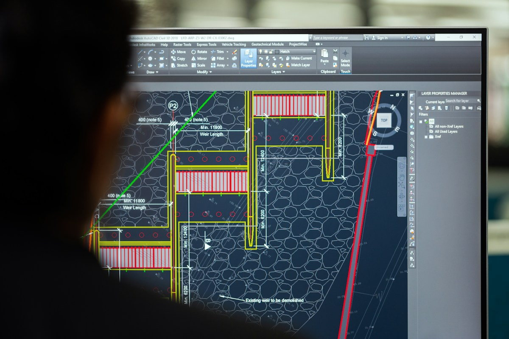
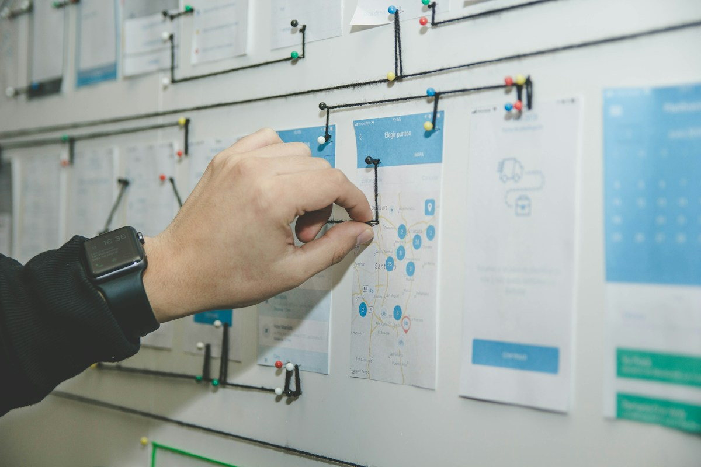

Founder & MD
Dr. Rajesh Murugan
M.Tech Environmental Eng.22+ years advancing mechanized non-entry septic protocols and wastewater compliance across Tamil Nadu.
TankWise is a demonstration service brand built around a simple idea: septic work should be mechanized, clearly explained and safely documented. The example team, fleet and operational claims below are placeholders to replace with verified business details before publication.
Too many owners only learn about their septic system when it stops working. TankWise exists as a client-ready concept for a service company that treats routine maintenance as skilled infrastructure care, not a messy afterthought.
Our model is straightforward: ask about the property before dispatch, work with mechanized equipment, protect occupants and leave a written service note. The best job is the one you never need to repeat because nobody guessed.
Experienced environmental engineers, municipal compliance leads, and fleet managers committed to dignified, mechanized sanitation in Coimbatore.
22+ years advancing mechanized non-entry septic protocols and wastewater compliance across Tamil Nadu.
Directs municipal partnerships, customer service benchmarks, and authorized disposal compliance across Coimbatore.
Manages 24/7 vacuum tanker dispatch, high-vacuum hose safety logistics, and rapid emergency backup response teams.

Specialist in pipeline push-camera diagnostic surveys, drain field percolation testing, and riser access retrofits.
These are sample role profiles, not verified employees. Replace titles and details with actual team records for a live company.
Plans staffing, safe access and site readiness before a service vehicle is sent.
Manages suction equipment, hose routing, load containment and service logging.
Uses camera equipment to document accessible line conditions and explain observations.
Keeps reminder schedules, household information and follow-up notes organized.
Confirms address, estimated tank size, availability and access details with the homeowner.
Coordinates PPE, mechanized work procedures and lawful transport and disposal documentation.
A responsible operation pairs vacuum extraction vehicles with cameras, accessible measurement tools and documented disposal arrangements.
No human entry into tanks. Vehicle access and safe hose management are confirmed onsite.

Camera and measurement tools can help explain line conditions and capacity rather than relying on guesswork.
Septic tanks can contain oxygen-deficient atmospheres and poisonous gases. Professional work must use trained staff, PPE, safe perimeter controls and appropriate mechanized equipment.
Keep residents, children and pets out of the equipment and tank access area. Close lids securely before leaving.
Transport and disposal must follow applicable requirements, using authorized treatment and disposal facilities.
A pump is not a drain-field rebuild. Explain where inspection, excavation or a separate repair is required.

This sample service timeline shows how a professional operation could grow: survey customer needs, develop safe mechanical processes, standardize the service log, and schedule routine follow-up.
Collect access and household information.
Use appropriate machinery and inspection tools.
Leave observations and clear next actions.
Review feedback and refine procedures.
Practical work, real explanations and a clean site should be normal, not a luxury.
Explain why the tank may be due and when another service may be more appropriate.
Use mechanized methods and protect crew, occupants and surroundings.
Write down the job, the limits of the visit and the next planning date.
Arrange a mechanized pumping or inspection visit before a minor issue turns into a very expensive weekend.